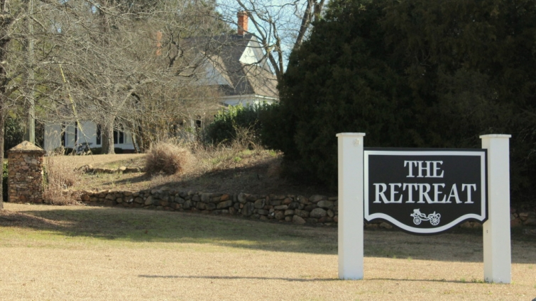
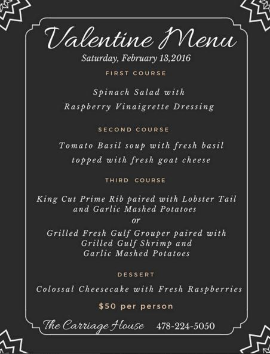

.png)
.PNG)
.PNG)
.PNG)
.PNG)
.PNG)
.JPG)
.JPG)
.PNG)
.PNG)



Happy Weekend! Good grief what a busy week it has been with my husband’s first week of retirement. Since I retired last May, every day has seemed like summer vacation to me, but with him home, every day now feels like a Saturday…a Saturday with things to do! (His list..I promise not mine. 🙂 )You may remember from the last post that we celebrated his retirement with two parties. Well that was the Wednesday and Friday before Valentine’s weekend. Today I want to share with you our celebration for Valentine’s Day.
I had originally planned to have his retirement party at The Carriage House Restaurant on Thursday night of that week. They have a great deal on an all-you-can-eat-catfish-dinner every Thursday. But the more I thought about it, I thought we would enjoy a more casual atmosphere and be able to socialize better if we had the party at our home (which is what we did.) Anyway, while I was checking out their Facebook page, I ran across this:

I thought, Hallelujah, I can surprise him with this dinner for Valentine’s Day!
And then, I saw this a little further down their page:
Oh my goodness!! The Retreat is the former Henderson Village that I have written about here and here. Since it has become a wedding event location, they have not opened it up for regular overnight accommodations. I was thrilled to see that this was available. You better believe I was on the phone with reservations for one of the rustic cabins in a heartbeat! And yes, I kept it a surprise until Saturday afternoon. 🙂
We had reservations for dinner at 5:30. So at 4:30 I gave my husband a Valentine’s card with the plans for the evening written inside. He was quite suprised. (I had told him to keep Saturday night open. He thought we were going to Outback. 🙂 ) We packed and were on our way.
 We picked up the key and drove around to the tenant cottage area. They have other homes to stay in that are very refined, but my husband loves to camp, so I knew the rustic nature of these would appeal more to him.
We picked up the key and drove around to the tenant cottage area. They have other homes to stay in that are very refined, but my husband loves to camp, so I knew the rustic nature of these would appeal more to him.
I had requested cottage #7 because of the decor that I had seen in it years ago.
Isn’t the bed just beautiful?!The furniture is a collection of primitive pieces mixed with some wicker.
There is a television in the tall cupboard and a stereo beside it.
There are gas log fireplaces in the cottages, but they are not working yet.
Fingers crossed for next year. 🙂
I did not realize that cottage #7 was designed for handicap accessibility. The rails obviously detracted from the bathroom’s appearance, but it did provide for an extremely large room.
We dropped off our bag, took these few photos, and then headed back over to the restaurant for dinner.Our table was in one of the cozy front rooms with a fireplace.
We were soon served a delicious salad followed by tomato basil soup.
(I am going to put goat cheese in our soup the next time we have it. It really adds to the flavor.)
Then they brought out the entrees. My husband had the grouper and shrimp, and I had the prime rib minus the lobster (shellfish allergy girl here. 🙁 ) Everything was well prepared.
And than came my favorite part – dessert!
(And it was VERY good. 🙂 )
After dinner we walked past the courtyard area and back to our cabin.
Breakfast was not included in the Valentine package, so my husband suggested we make a reservation for the brunch at The Perfect Pear – a local restaurant with always divine dishes. I couldn’t resist that even though we had stuffed ourselves with that huge dinner. After all, it was Valentine’s Day! 🙂
On Sunday we arrived there for brunch, and look what was on our table.
Loved the tulips!
(And the cranberry raisin bread in the basket.)
Here is their menu for Valentine’s Day:
(There were more choices listed on the back as well.)
The Creme Brulee French Toast Casserole with pecan syrup was a must-have for me.
(And it did not disappoint!)
After much discussion with a sweet young couple at the table next to us, my husband decided on the Hot Brown…a split biscuit loaded with turkey and ham, covered with a cheese sauce, bacon, a few cherry tomatoes, and a dollop of their pimento cheese…mmmm good!
And then, and only because it was Valentine’s Day (ha!) we ordered dessert.
Who am I kidding?
Their desserts are to die for, and I would never pass on them.
My husband chose their blackberry cobbler…
And I finished off our feast with a very rich chocolate torte.
And that was a lovely way to end our Valentine’s celebration. 🙂
(And now we are walking a mile a day and going on a diet!)
So…we had a retirement party on Wednesday, a retirement party on Friday, a night out on Saturday, and a Valentine’s brunch on Sunday. Then guess what. My husband’s birthday was Monday. I’m not kidding you. And yes, there was a party. 🙂 Stay tuned. It’s coming up in the next post.
(My husband says he is liking this retired life! LOL)
Enjoy your weekend!


.PNG)
What a fun looking weekend! The food looked especially yummy! You are living the good life! Keep it up!
———————————————————————
VERY fun! I don’t think we can keep partying at this pace though. LOL
(Remember we are supposed be living on retirement incomes!)
Kelly
You are certainly a “party girl” Kelly! Congrats to your husband on retiring. So glad you had a great Valentine’s celebration. That food looks scrumptious!! Looking forward to hearing about the next party!
——————————————————————–
Yes, lately I have been a party girl, but things are finally slowing down in that department. The food was absolutely delicious. I hope you had a good Valentine’s Day too Debbie.
Kelly
So much fun!! I would love staying there too! You and your husband do know how to celebrate. I am loving hearing all about your parties and excursions!
———————————————————————–
It was great to finally get to stay in the cabin that I had been eyeballing all these years. If they offer it again, I want to stay in the one with the red checked linens. 🙂
Kelly
OMG – that rustic cabin is perfect and the food! I don’t know why you don’t weigh two hundred pounds! Applause for enjoying this special time.
——————————————————————–
The cabin was lovely for sure. They have several I would like to stay in (like Goldilocks testing out the different beds!) My weight is NOT what it should be. I have got to do something about it. (Like stop eating so much!)
Kelly
Oh wow, what a nice Valentine’s celebration. And that food! Everything looked so delicious!! 🙂 I need a good recipe for tomato basil soup. Now, I’ll be searching the internet. I loved the rustic cabin too. So cozy.
———————————————————————
It was a very nice celebration for sure Gina. I will be on the look out for a good recipe for the soup. It should not be real difficult to make.
Kelly
You sure do know how to party! I gained ten pounds just looking at those three desserts! Oh, my! 😉
———————————————————————
Lately, we do know how to party! It seems we are getting a lot of practice. 🙂 The desserts were all VERY good, but I hope we don’t gain weight just by looking. We will all be in real trouble if that happens!
Kelly
Where is this located? I don’t really know where you are located!! I’m not familiar with the Retreat, it looks great!
——————————————————————-
The Retreat is located in Middle Georgia, and their website is here with all the information: http://www.theretreatofsouthernbridlefarms.com/location.html The Perfect Pear is located in downtown Perry, Georgia.
Kelly
OMG! Your killing with this post! YUMMO… Wishing I lived in the south. The Retreat looked so quaint. How fun. What a way to start a retirement. I’d say you both had a very delicious week!
———————————————————————–
Oh dear, I am sorry Debra. I didn’t mean to kill you with all the food! LOL Yes, we most certainly did have a very delicious week! 🙂
Kelly
Wow!!!! Makes me want to retire again and this time do it right!!!
———————————————————————
Ha ha! Yes, I think we are “doing it right” with retirement. 🙂
Kelly
Wow, Kelly!
You sure know how to celebrate. I am taking notes on how to celebrate and retire properly. Everything you guys did and ate looks so much fun and relaxing. Thanks for sharing it all with us. I can’t wait to see what is next. Take care.
Dawn
————————————————————————-
It has been a very fun start for my husband’s retirement. Mine just started with summer vacation…which was quite alright with me. 🙂
Kelly
My husband retired in The fall of 2015 and I retire in 7 weeks! You two are a great example for us!
———————————————————————
Congratulations to your husband, Laura, and best wishes to you on your retirement coming up soon! You will love it. 🙂
Kelly
how wonderful that you were able to start retirement in such a fantastic way. Hoping you will find many years of Valentine’s Day yet to come. P.S. I would’ve gone for the chocolate too.
———————————————————————-
Thank you for such a sweet comment. 🙂 I hope we have many more opportunities to celebrate Valentine’s Day in our future too.
I didn’t think I would be alone in choosing that chocolate. It was delicious (and you would have loved it.) 🙂
Kelly
Oh my! That matelisse bed cover and blue gingham are speaking my language. It sounds as though you are enjoying the retirement! That last chocolate desert looks very tempting! Always enjoy your travel and restaurant reviews!
——————————————————————-
They spoke my language too, Peggy. Which is precisely why I requested that particular room. 🙂 The furniture was very pretty too.
And yes, that chocolate torte was more than I could resist. I am glad you enjoy the posts!
Have a good week.
Kelly
Kelly,
I’m enjoying your post so very much. I have heard your mother talk about you and your house so many times and now to see it and see the wonderful and fun things that you do, are so nice. I really hate that John and I missed Walter’s 90th Birthday party and seeing your beautiful house.
Happy Retirement! Bobbie
——————————————————————–
I’m so glad you are enjoying the blog posts Mrs. Newton! And I do hate that you and your husband missed the big birthday party. I know my father in law would have loved to have seen you both there. I did pass your regrets along to him.
Thank you for the happy wishes for our retirement. We have certainly enjoyed our time for celebrating lately!
Kelly
Kelly,
Oh my goodness, what a charming room and the meal looked delicious. Breakfast is my favorite meal so I absolutely loved every single item you photographed.
Have a wonderful retirement you too!
Karen
———————————————————————-
Thanks Karen! I love to get breakfast out, so ordering brunch was great. Since you are a breakfast fan, you would really enjoy dining at the Perfect Pear’s Sunday brunch. 🙂
Hope you are having a wonderful weekend.
Kelly
What a special Valentine weekend. The fabulous food is such a contrast to the simple cabin. Both are so special. Since retiring from teaching on July 1 , I say that I am on permanent vacation! It is wonderful so continue to enjoy!
————————————————————————
Yes, it was a special weekend Ren. It was great that Valentine’s Day hit on a weekend! 🙂 Congratulations on your retirement. Enjoy your permanent vacation!
Kelly
Kelly, you have the best life, LOL…LOVE seeing what you are up to.
——————————————————————–
Aw thanks Tricia. I’m so glad you like reading about all our shenanigans!
Kelly
Oh my goodness, that must have been a wonderful Valentines getaway! All that wonderful food looks delicious. It’s all about moderation! So enjoy! Love all the shiplap!
———————————————————————–
It really was a wonderful getaway. I don’t think we had much moderation with all that food, but we did share the cheesecake. 🙂
(I loved all the walls too!)
Kelly
Sounds like a great week for you two! Happy retirement to your hubby. You’ll have to do a post about wonderful, low-cal salads soon!😄
———————————————————————-
Thank you Bobbie! And you are SO right about the low-cal salads! LOL
Kelly
Oh my word, you sound like us. We were so busy when we first retired that I was trying to figure out how we ever had time to work. Sounds like tons of fun and great parties.
———————————————————————
I know exactly what you mean about not knowing how you had time to work Marty. I have been wondering that for the last 8 1/2 months since I started my retirement!
Kelly
Thanks for sharing! Enjoyed being along for the trip.
No wonder he likes retirement.
You do know how to live.
PS that blue and white gingham on the bed gottcha girl.
———————————————————————–
We have kind of been partying a lot! It certainly won’t continue at this rate.
Yes, I loved that blue and white check on the bed. 🙂
Kelly
Wonderful!!!! Happy Retirement, Happy Valentine’s, Happy Birthday, Walter!!! Isn’t retirement just grand? 😉 And it really is! What a fine beginning 🙂 Kelly, your love of family and people and all things beautiful really shines through in everything you do and blog about here. I may not always post a comment, but I never miss reading each and every post! Thanks ♥
———————————————————————–
That’s a lot of happy Mari! 🙂 I appreciate your reading the posts, and thank you for taking the time to comment when you can. I have been so busy it has been difficult to write replies to all the comments lately, but I do read each and every one. Thank YOU!
Kelly
How do you not weigh a billion pounds? You always show the most delicious food AND decadent desserts, surely they are just for show, you don’t actually eat them, right?
Ah! memories of the reward of dining at Henderson Village after a long tiring trip to Atlanta. Sometimes we only had time to reward ourselves with just a simple cup of hot chocolate by the fire. Fun! Correction. Nothing was “simple” at Henderson Village.
Imagine a spend the night there! Such a fun Valentine.
——————————————————————
Oh I definitely eat it all, and I am needing to diet! Between Thanksgiving, Christmas, a January birthday party, and everything in the last week or so in February it has piled on the weight…or rather I have piled it on.
I’m so glad you have enjoyed the fun of Henderson Village too. I could go for a cup of hot cocoa there now. 🙂
Kelly
Lovely post! Just got back from a walk in the park and clicked on to blog and have been dreaming about your wonderful weekend. Lovely pictures of the cottage and all the food goodies. This was a week to remember for you two. Daytona 400 this weekend so we are staying in and I’m making a nice chicken broccoli casserole today and grilled steaks tomorrow. This will be our last week at beach so will enjoy every minute. Everyone has been visiting and we have been enjoying all our favorite eating places. I think spring is just around the corner– loved your tulips on table and now I’m looking forward to all things SPRING!! Have a lovely weekend, Kelly and Walter!
——————————————————————–
I just hate this is your last week at the beach house. Enjoy every minute of it! I bet the Daytona race makes it crazy around there! It does seem that spring is almost here. I have seen the daffodils blooming nearby. 🙂
Kelly